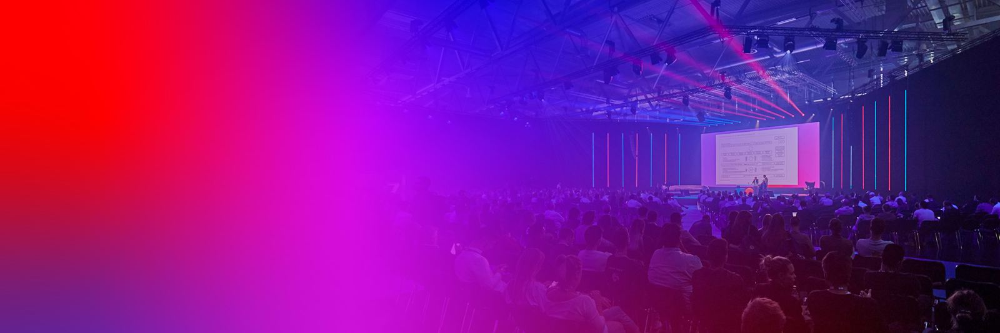

Conferences · Tech
DMEXCO 2027
- Dates
- –
- Venue
- Koelnmesse, Messeplatz 1, 50679 Cologne
- Location
- Cologne, Germany
- Format
- In-person
- Category
- Tech
- Industry
- Tech
- Organiser
- Koelnmesse / DMEXCO
- Official website
- https://dmexco.com/
About
Dates are local to the host city (Central European Time, UTC+1 / UTC+2 in summer).
Topics: digital marketing, tech, media.
No organiser attendance figure found on the official pages fetched 24 Nov 2026. Ranked by our estimated size tier 'large' (30,000-100,000 attendees/visits), a judgement from format, venue and scale, not an official number.
Sources
Hotels
- Excelsior Hotel Ernst — 5★ · Trankgasse 1-5, 50667 Köln, Germany · 1.7 km from the venue · Price on request
- Radisson Blu Hotel Cologne — 4★ · Messe Kreisel 3, 50679 Köln, Germany · 0.4 km from the venue · Price on request
- Hotel Stadtpalais — 4★ · Deutz-Kalker-Str. 52, 50679 Köln, Germany · 1.0 km from the venue · Price on request
- Hotel Viktoria — 4★ · Worringer Straße 23, 50668 Köln, Germany · 1.1 km from the venue · Price on request
- Mercure Hotel Köln Belfortstraße — 4★ · Belfortstraße 9, 50668 Köln, Germany · 1.4 km from the venue · Price on request
Venue
- Koelnmesse — Exhibition grounds · Messeplatz 1, 50679 Cologne